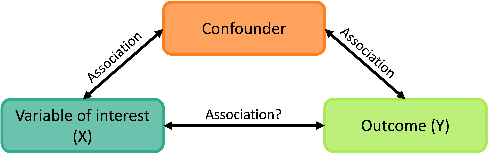
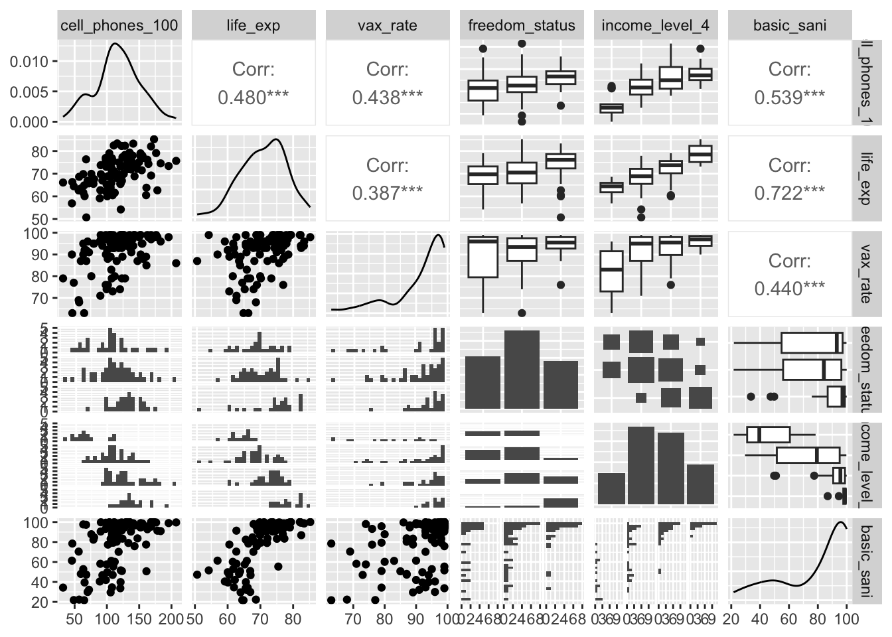
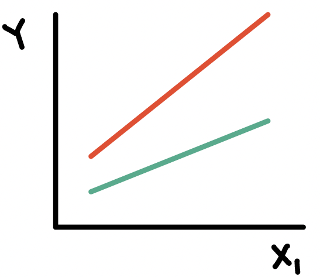
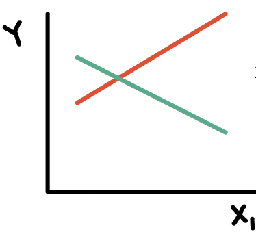
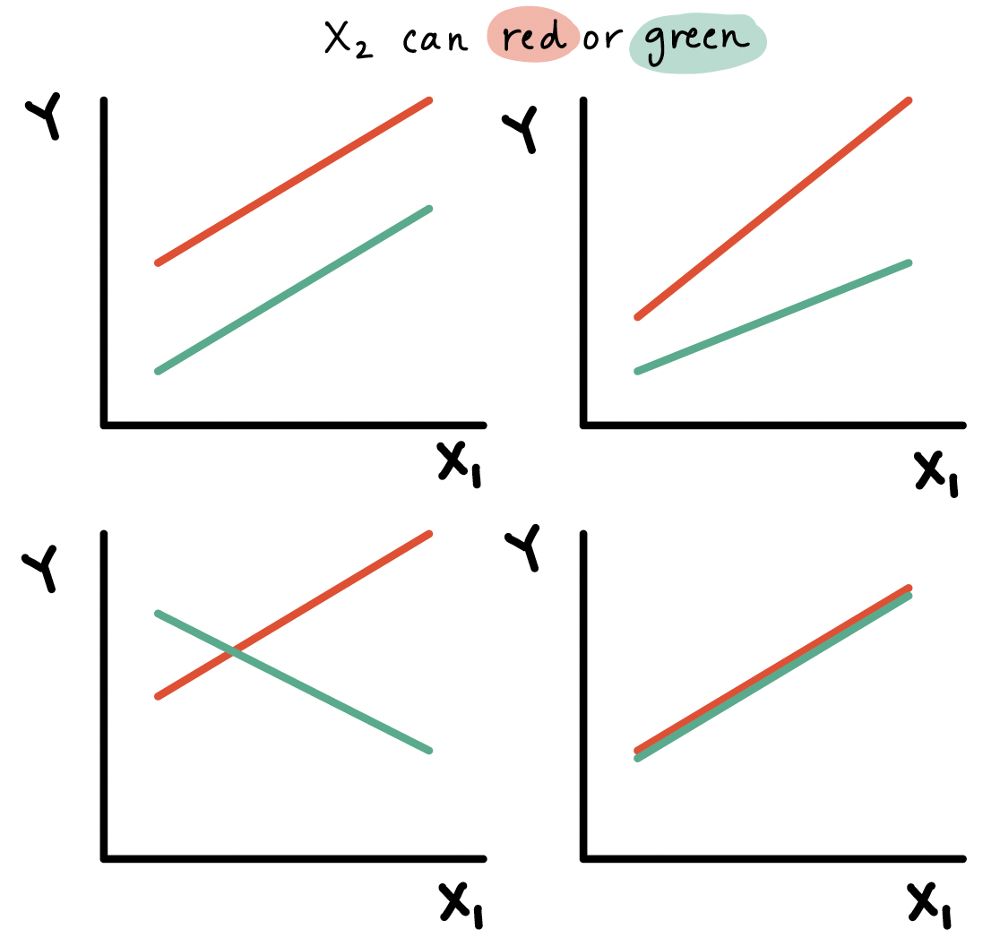
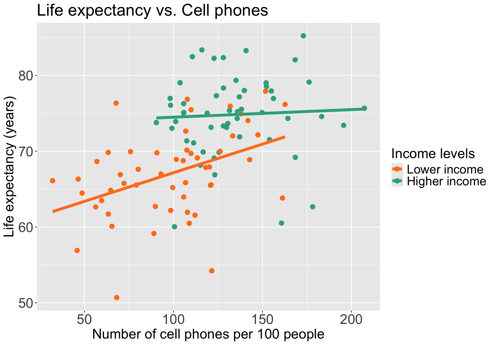
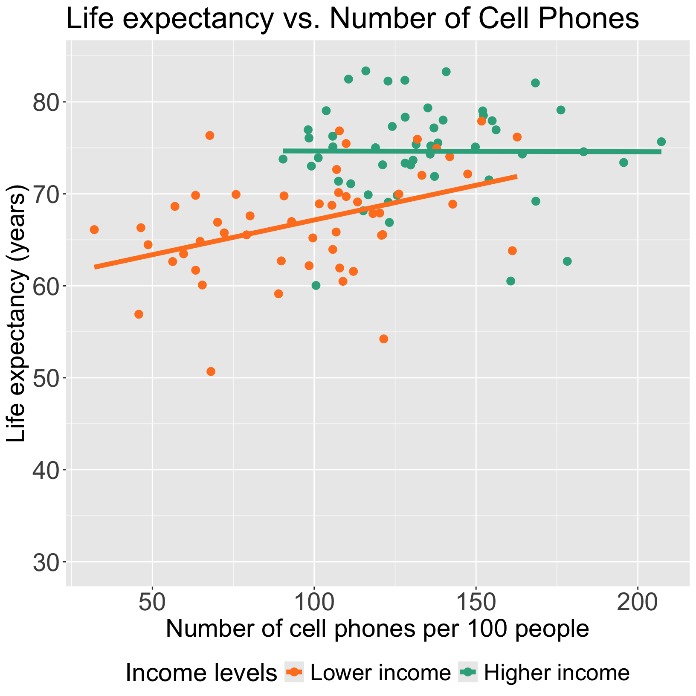
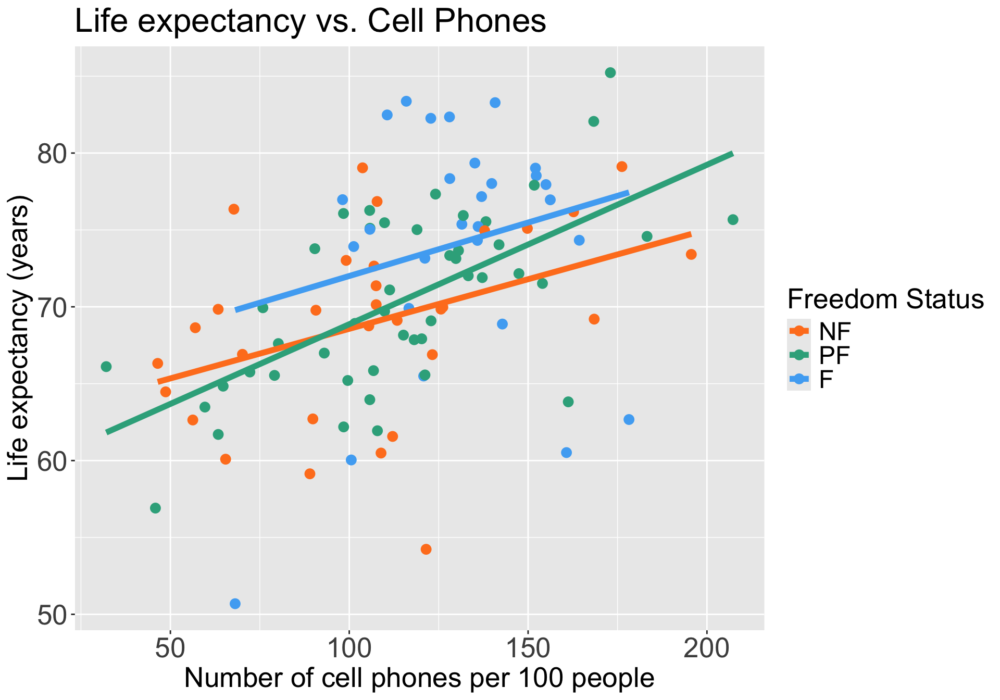

Warning: Using `size` aesthetic for lines was deprecated in ggplot2 3.4.0.
ℹ Please use `linewidth` instead.`geom_smooth()` using formula = 'y ~ x'
This time:
Next time:
https://academic.oup.com/jrssig/article/22/6/30/8275180?searchresult=1


Model Selection
Building a model
Selecting variables
Prediction vs interpretation
Comparing potential models
Model Fitting
Find best fit line
Using OLS in this class
Parameter estimation
Categorical covariates
Interactions
Model Evaluation
Model Use (Inference)
Warning: Using `size` aesthetic for lines was deprecated in ggplot2 3.4.0.
ℹ Please use `linewidth` instead.`geom_smooth()` using formula = 'y ~ x'
This time:
Next time:
A confounder must be…

gapm2 %>% ggpairs()`stat_bin()` using `bins = 30`. Pick better value `binwidth`.
`stat_bin()` using `bins = 30`. Pick better value `binwidth`.
`stat_bin()` using `bins = 30`. Pick better value `binwidth`.
`stat_bin()` using `bins = 30`. Pick better value `binwidth`.
`stat_bin()` using `bins = 30`. Pick better value `binwidth`.
`stat_bin()` using `bins = 30`. Pick better value `binwidth`.
`stat_bin()` using `bins = 30`. Pick better value `binwidth`.
`stat_bin()` using `bins = 30`. Pick better value `binwidth`.
\[Y= \beta_0 + \beta_1X_{1}+ \beta_2X_{2} + \epsilon\]
And we assume that every level of the confounder, there is parallel slopes
Note: to interpret \(\beta_1\), we did not specify any value of \(X_2\); only specified that it be held constant
The above model assumes that \(X_{1}\) and \(X_{2}\) do not interact (with respect to their effect on \(Y\))
Epidemiology: no “effect modification”
Meaning the effect of \(X_{1}\) is the same regardless of the values of \(X_{2}\)
This model is often called a “main effects model”
We have seen a plot of life expectancy vs. cell phones with different levels of food supply colored (Lesson 8)
In our plot and the model, we treat food supply as a confounder
If food supply is a confounder in the relationship between life expectancy and cell phones, then we only use main effects in the model:
\[\text{LE} = \beta_0 + \beta_1 \text{CP} + \beta_2 \text{VR} + \epsilon\]
mr1 <- lm(life_exp ~ cell_phones_100 + vax_rate,
data = gapm)
(mr1_2d = ggPredict(mr1, interactive = T))Warning: `aes_string()` was deprecated in ggplot2 3.0.0.
ℹ Please use tidy evaluation idioms with `aes()`.
ℹ See also `vignette("ggplot2-in-packages")` for more information.
ℹ The deprecated feature was likely used in the ggiraphExtra package.
Please report the issue to the authors.An additional variable in the model
An effect modifier will change the effect of \(X_1\) on \(Y\) depending on its value
Aka: as the effect modifier’s values change, so does the association between \(Y\) and \(X_1\)
So the coefficient estimating the relationship between \(Y\) and \(X_1\) changes with another variable
Example: A breast cancer education program (the exposure) that is much more effective in reducing breast cancer (outcome) in rural areas than urban areas.


Interactions!!
We can incorporate interactions into our model through product terms: \[Y = \beta_0 + \beta_1X_{1}+ \beta_2X_{2} + \beta_3X_{1}X_{2} + \epsilon\]
Terminology:
main effect parameters: \(\beta_1,\beta_2\)
interaction parameter: \(\beta_3\)
Common types of interactions:
Synergism: \(X_{2}\) strengthens the \(X_{1}\) effect
Antagonism:\(X_{2}\) weakens the \(X_{1}\) effect
If the interaction coefficient is not significant
If the main effect of \(X_2\) is also not significant

This time:
Next time:
Let’s say we only have two income groups: low income and high income
We can start by visualizing the relationship between life expectancy and cell phones by income level
Questions of interest: Is the effect of number of cell phones on life expectancy differ depending on income level?
Let’s run an interaction model to see!
`geom_smooth()` using formula = 'y ~ x'
Model we are fitting:
\[ LE = \beta_0 + \beta_1 CP + \beta_2 I(\text{high income}) + \beta_3 CP \cdot I(\text{high income}) + \epsilon\]
m_int_inc2 = gapm %>%
lm(formula = life_exp ~ cell_phones_100 + income_level_2 +
cell_phones_100*income_level_2)OR
m_int_inc2 = gapm %>%
lm(formula = life_exp ~ cell_phones_100*income_level_2)tidy_m_int_inc2 = tidy(m_int_inc2, conf.int=T)
tidy_m_int_inc2 %>% gt() %>% tab_options(table.font.size = 35) %>%
fmt_number(decimals = 3)| term | estimate | std.error | statistic | p.value | conf.low | conf.high |
|---|---|---|---|---|---|---|
| (Intercept) | 59.609 | 2.406 | 24.776 | 0.000 | 54.836 | 64.382 |
| cell_phones_100 | 0.076 | 0.023 | 3.247 | 0.002 | 0.029 | 0.122 |
| income_level_2Higher income | 13.879 | 4.438 | 3.127 | 0.002 | 5.075 | 22.683 |
| cell_phones_100:income_level_2Higher income | −0.066 | 0.036 | −1.829 | 0.070 | −0.137 | 0.006 |
\[ \begin{aligned} \widehat{LE} = & \widehat\beta_0 + \widehat\beta_1 CP + \widehat\beta_2 I(\text{high income}) + \widehat\beta_3 CP \cdot I(\text{high income}) \\ \widehat{LE} = & 59.61 + 0.076 \cdot CP + 13.879 \cdot I(\text{high income}) -0.066 \cdot CP \cdot I(\text{high income}) \end{aligned}\]
\[ \begin{aligned} \widehat{LE} = & \widehat\beta_0 + \widehat\beta_1 CP + \widehat\beta_2 I(\text{high income}) + \widehat\beta_3 CP \cdot I(\text{high income}) \\ \widehat{LE} = & 59.61 + 0.076 \cdot CP + 13.879 \cdot I(\text{high income}) -0.066 \cdot CP \cdot I(\text{high income}) \end{aligned}\]
For lower income countries: \(I(\text{high income}) =0\)
\[ \begin{aligned} \widehat{LE} = & \widehat\beta_0 + \widehat\beta_1 CP + \widehat\beta_2 \cdot 0 + \widehat\beta_3 CP \cdot 0 \\ \widehat{LE} = & 59.61 + 0.076 \cdot CP + 13.879 \cdot 0 \\ & -0.066 \cdot CP \cdot 0 \\ \widehat{LE} = & 59.61 + 0.076 \cdot CP \end{aligned}\]
For higher income countries: \(I(\text{high income}) =1\)
\[ \begin{aligned} \widehat{LE} = & \widehat\beta_0 + \widehat\beta_1 CP + \widehat\beta_2 \cdot 1 + \widehat\beta_3 CP \cdot 1 \\ \widehat{LE} = & 59.61 + 0.076 \cdot CP + 13.879 \cdot 1 \\ & -0.066 CP \cdot 1 \\ \widehat{LE} = & (59.61 + 13.879) + (0.076 -0.066) \cdot CP \\ \widehat{LE} = & 73.49 + 0.01 \cdot CP \end{aligned}\]
For lower income countries: \(I(\text{high income}) =0\)
\[ \begin{aligned} \widehat{LE} = & \widehat\beta_0 + \widehat\beta_1 CP\\ \widehat{LE} = & 59.61 + 0.076 \cdot CP \end{aligned}\]
For higher income countries: \(I(\text{high income}) =1\)
\[ \begin{aligned} \widehat{LE} = & (\widehat\beta_0 +\widehat\beta_2) + (\widehat\beta_1 +\widehat\beta_3) CP \\ \widehat{LE} = & (59.61 + 13.879) + (0.076 -0.066) \cdot CP \\ \widehat{LE} = & 73.49 + 0.01 \cdot CP \end{aligned}\]
`geom_smooth()` using formula = 'y ~ x'

\[ \begin{aligned} \widehat{LE} = & (\widehat\beta_0 +\widehat\beta_2) + (\widehat\beta_1 +\widehat\beta_3) CP \\ \widehat{LE} = & (59.61 + 13.879) + (0.076 -0.066) \cdot CP \\ \widehat{LE} = & 73.49 + 0.01 \cdot CP \end{aligned}\]
Intercept of 73.49 is misleading because
Other online sources about when and when not to center:
Centering a variable means that we will subtract the mean or median (or other measurement of center) from the measured value
Mean centered: \[X_i^c = X_i - \overline{X}\]
Median centered: \[X_i^c = X_i - \text{median } X\]
Centering the continuous variables in a model (when they are involved in interactions) helps with:
Interpretations of the coefficient estimates
Correlation between the main effect for the variable and the interaction that it is involved with
gapm = gapm %>%
mutate(CP_c = cell_phones_100 - mean(cell_phones_100))(mean_CP = mean(gapm$cell_phones_100))[1] 116.5234Now all intercept values (in each respective freedom status) will be the mean life expectancy when number of cell phones per 100 people is 116.52
We will used center CP for the rest of the lecture
m_int_inc2 = gapm %>%
lm(formula = life_exp ~ CP_c*income_level_2)tidy(m_int_inc2, conf.int=T) %>% gt() %>% tab_options(table.font.size = 35) %>% fmt_number(decimals = 3)| term | estimate | std.error | statistic | p.value | conf.low | conf.high |
|---|---|---|---|---|---|---|
| (Intercept) | 68.408 | 0.850 | 80.518 | 0.000 | 66.723 | 70.094 |
| CP_c | 0.076 | 0.023 | 3.247 | 0.002 | 0.029 | 0.122 |
| income_level_2Higher income | 6.247 | 1.221 | 5.117 | 0.000 | 3.825 | 8.668 |
| CP_c:income_level_2Higher income | −0.066 | 0.036 | −1.829 | 0.070 | −0.137 | 0.006 |
\[ \begin{aligned} \widehat{LE} = & \widehat\beta_0 + \widehat\beta_1 CP^c + \widehat\beta_2 I(\text{high income}) + \widehat\beta_3 CP^c \cdot I(\text{high income}) \\ \widehat{LE} = & 68.408 + 0.076 \cdot CP^c + 6.247 \cdot I(\text{high income}) -0.066 \cdot CP^c \cdot I(\text{high income}) \end{aligned}\]
\[ \begin{aligned} \widehat{LE} = & \widehat\beta_0 + \widehat\beta_1 CP^c + \widehat\beta_2 I(\text{high income}) + \widehat\beta_3 CP^c \cdot I(\text{high income}) \\ \widehat{LE} = & \bigg[\widehat\beta_0 + \widehat\beta_2 \cdot I(\text{high income})\bigg] + \underbrace{\bigg[\widehat\beta_1 + \widehat\beta_3 \cdot I(\text{high income}) \bigg]}_\text{CP's effect} CP^c \\ \end{aligned}\]
Interpretation:
\(\beta_3\) = mean change in number of cell phones’s effect, comparing higher income to lower income levels
where the “number of cell phones effect” = change in mean life expectancy per one additional cell phone (slope) with income level held constant, i.e. “adjusted number of cell phones effect”
In summary, the interaction term can be interpreted as “difference in adjusted cell phones’ effect comparing higher income to lower income levels”
It will be helpful to test the interaction to round out this interpretation!!
\[ LE = \beta_0 + \beta_1 CP^c + \beta_2 I(\text{high income}) + \beta_3 CP^c \cdot I(\text{high income}) + \epsilon\]
Null \(H_0\)
\(\beta_3=0\)
Alternative \(H_1\)
\(\beta_3\neq0\)
Null / Smaller / Reduced model
\[\begin{aligned} LE = & \beta_0 + \beta_1 CP^c + \beta_2 I(\text{high income}) + \\ &\epsilon \end{aligned}\]
Alternative / Larger / Full model
\[\begin{aligned} LE = & \beta_0 + \beta_1 CP^c + \beta_2 I(\text{high income}) + \\ &\beta_3 CP^c \cdot I(\text{high income}) + \epsilon \end{aligned}\]
m_int_inc_red = gapm %>% lm(formula = life_exp ~ CP_c + income_level_2)
m_int_inc_full = gapm %>%
lm(formula = life_exp ~ CP_c + income_level_2 + CP_c*income_level_2)anova_int = anova(m_int_inc_red, m_int_inc_full)
anova_int %>% tidy() %>% gt() %>% tab_options(table.font.size = 35) %>% fmt_number(decimals = 3)| term | df.residual | rss | df | sumsq | statistic | p.value |
|---|---|---|---|---|---|---|
| life_exp ~ CP_c + income_level_2 | 102.000 | 2,957.645 | NA | NA | NA | NA |
| life_exp ~ CP_c + income_level_2 + CP_c * income_level_2 | 101.000 | 2,862.847 | 1.000 | 94.798 | 3.344 | 0.070 |
m_int_inc_full_tidy = tidy(m_int_inc_full, conf.int=T)Conclusion: There is not a significant interaction between cell phones and income level (p = 0.07)
This time:
Next time:
We can start by visualizing the relationship between life expectancy and cell phones by freedom status
Questions of interest: Does the effect of number of cell phones on life expectancy differ depending on freedom status?
Let’s run an interaction model to see!
`geom_smooth()` using formula = 'y ~ x'
Model we are fitting:
\[\begin{aligned}LE = &\beta_0 + \beta_1 CP^c + \beta_2 I(\text{FS} = \text{PF}) + \beta_3 I(\text{FS} = \text{F}) + \\ & \beta_4 CP^c \cdot I(\text{FS} = \text{PF}) + \beta_5 CP^c \cdot I(\text{FS} = \text{F}) + \epsilon\end{aligned}\]
In R:
m_int_wr = gapm %>%
lm(formula = life_exp ~ CP_c + freedom_status + CP_c*freedom_status)OR
m_int_wr = gapm %>% lm(formula = life_exp ~ CP_c * freedom_status)tidy(m_int_wr, conf.int=T) %>% gt() %>%
tab_options(table.font.size = 35) %>% fmt_number(decimals = 3)| term | estimate | std.error | statistic | p.value | conf.low | conf.high |
|---|---|---|---|---|---|---|
| (Intercept) | 69.635 | 1.101 | 63.234 | 0.000 | 67.450 | 71.820 |
| CP_c | 0.065 | 0.029 | 2.263 | 0.026 | 0.008 | 0.121 |
| freedom_statusPF | 0.947 | 1.406 | 0.673 | 0.502 | −1.844 | 3.737 |
| freedom_statusF | 3.518 | 1.708 | 2.060 | 0.042 | 0.130 | 6.907 |
| CP_c:freedom_statusPF | 0.039 | 0.038 | 1.036 | 0.303 | −0.036 | 0.114 |
| CP_c:freedom_statusF | 0.005 | 0.056 | 0.091 | 0.928 | −0.105 | 0.115 |
\[\begin{aligned} \widehat{LE} = & \widehat\beta_0 + \widehat\beta_1 CP^c + \widehat\beta_2 I(\text{FS} = \text{PF}) + \widehat\beta_3 I(\text{FS} = \text{F}) + \\ & \widehat\beta_4 CP^c \cdot I(\text{FS} = \text{PF}) + \widehat\beta_5 CP^c \cdot I(\text{FS} = \text{F}) \\ \widehat{LE} = & 69.635 + 0.065 \cdot CP^c + 0.947 \cdot I(\text{FS} = \text{PF}) + 3.518 \cdot I(\text{FS} = \text{F}) + \\ & 0.039 \cdot CP^c \cdot I(\text{FS} = \text{PF}) + 0.005 \cdot CP^c \cdot I(\text{FS} = \text{PF}) \end{aligned}\]
\[\begin{aligned} \widehat{LE} = & \widehat\beta_0 + \widehat\beta_1 CP^c + \widehat\beta_2 I(\text{FS} = \text{PF}) + \widehat\beta_3 I(\text{FS} = \text{F}) + \\ & \widehat\beta_4 CP^c \cdot I(\text{FS} = \text{PF}) + \widehat\beta_5 CP^c \cdot I(\text{FS} = \text{F}) \\ \widehat{LE} = & 69.635 + 0.065 \cdot CP^c + 0.947 \cdot I(\text{FS} = \text{PF}) + 3.518 \cdot I(\text{FS} = \text{F}) + \\ & 0.039 \cdot CP^c \cdot I(\text{FS} = \text{PF}) + 0.005 \cdot CP^c \cdot I(\text{FS} = \text{PF}) \end{aligned}\]
Not free
\[\begin{aligned} \widehat{LE} = & \widehat\beta_0 + \widehat\beta_1 CP^c + \widehat\beta_2 \cdot 0 + \\ & \widehat\beta_3 \cdot 0 + \widehat\beta_4 CP^c \cdot 0 + \\& \widehat\beta_5 CP^c \cdot 0 \\ \widehat{LE} = &\widehat\beta_0 + \widehat\beta_1 CP^c\\ \end{aligned}\]
Partly free
\[\begin{aligned} \widehat{LE} = & \widehat\beta_0 + \widehat\beta_1 CP^c + \widehat\beta_2 \cdot 1 + \\ & \widehat\beta_3 \cdot 0 + \widehat\beta_4 CP^c \cdot 1 + \\& \widehat\beta_5 CP^c \cdot 0 \\ \widehat{LE} = & \big(\widehat\beta_0 + \widehat\beta_2\big) + \big(\widehat\beta_1 + \widehat\beta_4\big) CP^c\\ \end{aligned}\]
Free
\[\begin{aligned} \widehat{LE} = & \widehat\beta_0 + \widehat\beta_1 CP^c + \widehat\beta_2 \cdot 0 + \\ & \widehat\beta_3 \cdot 1 + \widehat\beta_4 CP^c \cdot 0 + \\& \widehat\beta_5 CP^c \cdot 1 \\ \widehat{LE} = & \big(\widehat\beta_0 + \widehat\beta_3\big) + \big(\widehat\beta_1 + \widehat\beta_5\big) CP^c\\ \end{aligned}\]
\[\begin{aligned} \widehat{LE} = & \widehat\beta_0 + \widehat\beta_1 CP^c + \widehat\beta_2 I(\text{FS} = \text{PF}) + \widehat\beta_3 I(\text{FS} = \text{F}) + \\ & \widehat\beta_4 CP^c \cdot I(\text{FS} = \text{PF}) + \widehat\beta_5 CP^c \cdot I(\text{FS} = \text{F}) \\ \widehat{LE} = & \bigg[\widehat\beta_0 + \widehat\beta_2 I(\text{FS} = \text{PF}) + \widehat\beta_3 I(\text{FS} = \text{F})\bigg] + \\ &\underbrace{\bigg[\widehat\beta_1 + \widehat\beta_4 \cdot I(\text{FS} = \text{F}) + \widehat\beta_5 \cdot I(\text{FS} = \text{F}) \bigg]}_\text{CP's effect} CP^c \\ \end{aligned}\]
Interpretation:
It will be helpful to test the interaction to round out this interpretation!!
\[\begin{aligned}LE = &\beta_0 + \beta_1 CP^c + \beta_2 I(\text{FS} = \text{PF}) + \beta_3 I(\text{FS} = \text{F}) + \\ & \beta_4 CP^c \cdot I(\text{FS} = \text{PF}) + \beta_5 CP^c \cdot I(\text{FS} = \text{F}) + \epsilon\end{aligned}\]
Null \(H_0\)
\(\beta_4= \beta_5 =0\)
Alternative \(H_1\)
\(\beta_4\neq0\) and/or \(\beta_5\neq0\)$
Null / Smaller / Reduced model
\[\begin{aligned}LE = &\beta_0 + \beta_1 CP^c + \beta_2 I(\text{FS} = \text{PF}) + \\ &\beta_3 I(\text{FS} = \text{F}) + \epsilon\end{aligned}\]
Alternative / Larger / Full model
\[\begin{aligned}LE = &\beta_0 + \beta_1 CP^c + \beta_2 I(\text{FS} = \text{PF}) + \beta_3 I(\text{FS} = \text{F}) + \\ & \beta_4 CP^c \cdot I(\text{FS} = \text{PF}) + \beta_5 CP^c \cdot I(\text{FS} = \text{F}) + \epsilon\end{aligned}\]
m_int_fs_red = gapm %>% lm(formula = life_exp ~ CP_c + freedom_status)
m_int_fs_full = gapm %>%
lm(formula = life_exp ~ CP_c + freedom_status + CP_c*freedom_status)anova_int_fs = anova(m_int_fs_red, m_int_fs_full)
anova_int_fs %>% tidy() %>% gt() %>%
tab_options(table.font.size = 35) %>% fmt_number(decimals = 3)| term | df.residual | rss | df | sumsq | statistic | p.value |
|---|---|---|---|---|---|---|
| life_exp ~ CP_c + freedom_status | 101.000 | 3,517.244 | NA | NA | NA | NA |
| life_exp ~ CP_c + freedom_status + CP_c * freedom_status | 99.000 | 3,475.580 | 2.000 | 41.664 | 0.593 | 0.554 |
Conclusion: There is not a significant interaction between number of cell phones and freedom status (p = 0.554)
Freedom status is NOT an effect measure modifier of CP on LE